Chapter 4: Graphics¶
About this document¶
Scope and purpose¶
This document is the training manual for the technical introduction to PSOC™ Edge E84 features. This manual helps in getting started with different applications leveraging key features for PSOC™ Edge, using ModusToolbox™ software.
The training is divided into multiple chapters covering topics like audio, graphics, machine learning, among others.
Chapter 4 discusses PSOC™ Edge’s Graphics features.
Intended audience¶
The document is intended for design engineers, technicians, and developers of electronic systems.
Introduction¶
This manual provides detailed instructions to create, configure, build, and run application code examples on the PSOC™ Edge E84 MCU.
Prerequisites¶
See the Prerequisites section in the Chapter 1 training manual for a complete list of prerequisites and development tools.
Tools for graphics labs¶
Note that graphics labs utilize the following additional tools:
- EEZ Studio v0.29.0 or later
- This tool is used in the Graphics LVGL demo code example. It is not required to run the default code example, but it’s used to build a custom LVGL user interface (UI).
-
Python 3, including the
pypngandlz4Python modules:python -m pip install pypng==0.20220715.0 python -m pip install lz4 -
Pngquant v2.17.0 or later
- Download binaries, unzip, and add folder to path environment variable
Code example: Graphics using VGLite¶
Objective¶
This code example demonstrates the utilization of Vivante® platform-independent VGLite graphics API to carry out hardware-accelerated 2D vector drawing operations and render the generated image on a 4.3-inch 800x480 display. The display is connected to the PSOC™ Edge E84 MCU via the MIPI Display Serial Interface (DSI). The code runs in a FreeRTOS environment.
Description¶
Resource initialization for this example is performed by this CM33 non-secure project. It configures the system clocks, pins, the clock to peripheral connections, and other platform resources. It then enables the CM55 core using the Cy_SysEnableCM55() function and allows the Idle task to put CM33 in DeepSleep mode.
In the CM55 application, the clocks and system resources are initialized by the BSP initialization function. The retarget-io middleware is configured to use the debug UART. The debug UART prints a message as shown in the Terminal output on program startup. The onboard KitProg3 acts as the USB-UART bridge to create the virtual COM port.
The CM55 application drives the LCD and renders the image using the PSOC™ Edge graphics subsystem, which houses an independent 2.5D GPU, a display controller (DC), and a MIPI DSI host controller with a MIPI D-PHY physical layer interface.
The GPU supports vector graphics (drawing circles, rectangles, quadratic curves) and font support. This code example implements operations like rotate/scale, color fill, and color conversion. After the GPU renders the frames, they are transferred to the MIPI DSI host controller via the DC and displayed on the LCD.
Hardware setup¶
This example uses the 4.3-inch Raspberry Pi DSI 800x480 display included with the PSOC™ Edge E84 EVK. To use a different display, see the code example README.
Note: This example requires BOOT SW in ON position.
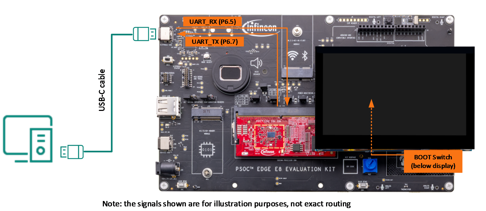
Flow chart¶
The following flow chart shows the complete code flow of this code example.
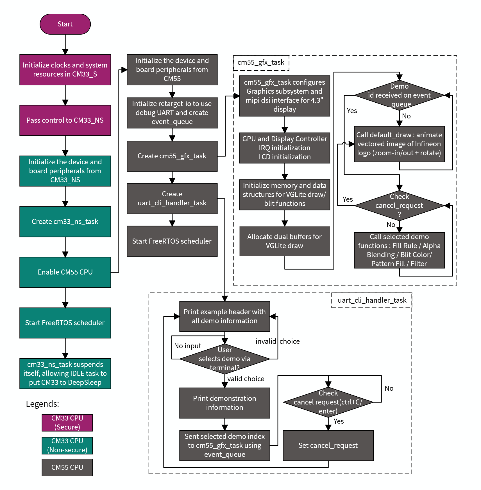
Project creation¶
- Follow steps in Appendix A: Creating a PSOC™ Edge application in ModusToolbox™ to create a new application When creating the application, select the PSOC™ Edge Graphics using VGLite API application under the Graphics section.
Note: To prevent issues with Windows path length, it’s recommended to rename the project if your workspace path is long.
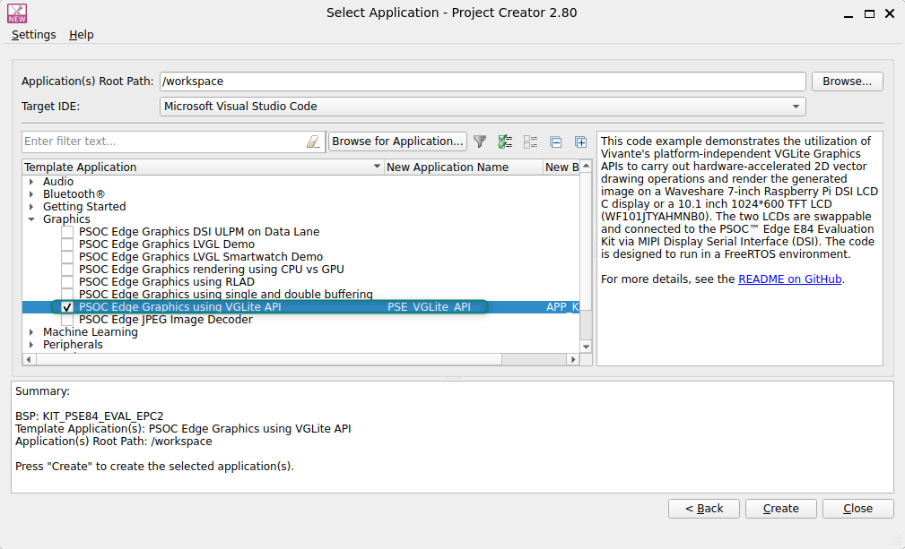
- Build and program the application
- [INFO] No modifications are needed to execute the default code example; however, some important files for this project are highlighted as shown in the following figure:
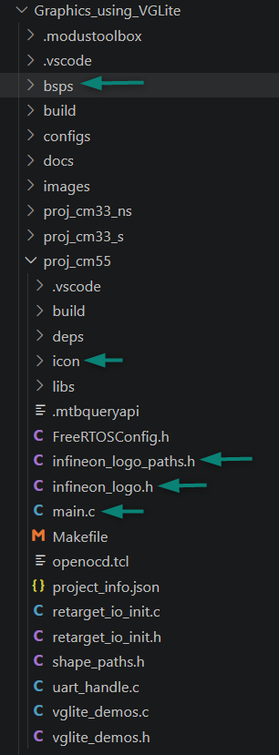
proj_cm55/infineon_logo_paths.h: This file defines the vector path data for the Infineon logo, which is rendered using thevg_lite_drawAPI. The path data is manually extracted fromimages/infineon_logo.svgby mapping the vector path opcodes required for plotting. This vector path is used in thedefault_drawfunction to animate the logo with zoom-in/out and rotation effects, and it is also utilized in the blit color rendering demo, where the rectangle containing the logo (rendered viavg_lite_draw) is processed using thevg_lite_blit_rectAPIproj_cm55/infineon_logo.h: This file contains the C array holding the pixel data for the Infineon logo image. It is used in the Pattern Fill Demonstration to render the Infineon logo within four different shapesicon/*.h: These header files define the C arrays that hold pixel data for the four icons. They are used in the filter demo, where the VG_LITE_FILTER_LINEAR filter is applied to them- Application code: The CM55 CPU utilizes the graphics subsystem and VGLite APIs to demonstrate five different use cases. The main function (
proj_cm55/main.c) first initializes the BSP. It then performs retarget-io initialization to use the debug UART port and creates an event_queue to receive notifications of selected demonstrations. After this, it creates thecm55_gfx_taskanduart_cli_handlerFreeRTOS tasks:cm55_gfx_task: This task is responsible for initializing the graphics subsystem. It initializes the LCD panel through the I2C interface, initializes the VGLite engine, creates buffers, and configures the identity matrix. After initialization, it enters a loop where it checks theevent_queue. If no events are received, it calls thedefault_drawfunction to display the Infineon logo with zoom and rotation effects as the default screen. When a demo number is received, the corresponding demo function is executed repeatedly until thecancel_requestedflag is set. Once cancellation is triggered, the task exits the demo loop and returns to the main loop, continuing to check the event_queue and calldefault_draw. It also logs FPS and CPU usage to the UART terminal throughout execution.uart_cli_handler: This task manages user interaction through the UART terminal. It first displays the header "PSOC™ Edge MCU: Graphics using VGLite API" and lists five GPU operations to be demonstrated. When the user selects one of the listed operations by entering its corresponding number (1 to 5), it prints information about the selected operation and sends the operation serial number tocm55_gfx_taskvia theevent_queue. To exit a running GPU operation and return to the default display, the user can press Ctrl+C or Enter. When this occurs, the task sets thecancel_requestedflag to notifycm55_gfx_taskto stop the active operation and resume the default loop.
bsps/TARGET_APP_KIT_PSE84_EVAL_EPC2/config/design.modus: This file stores Device Configurator information, display parameters, and memory configuration, among other configurations
- [INFO] To observe the graphics support configuration, open the Device Configurator tool by clicking the Configure Device button in the ModusToolbox™ for VS Code extension. Navigate to the Peripherals tab and check the Graphics option under System.
- Observe display parameters such as Display Type, Width, Height, HSYNC, and VSYNC. These parameters can be adjusted for other types of displays
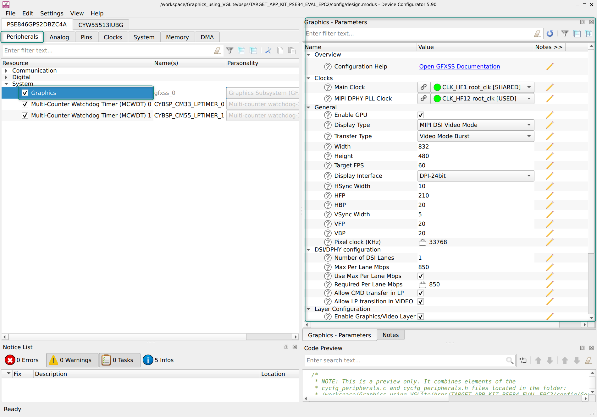
- Observe the reference clock for the MIPI DPHY PLL to 24 MHz
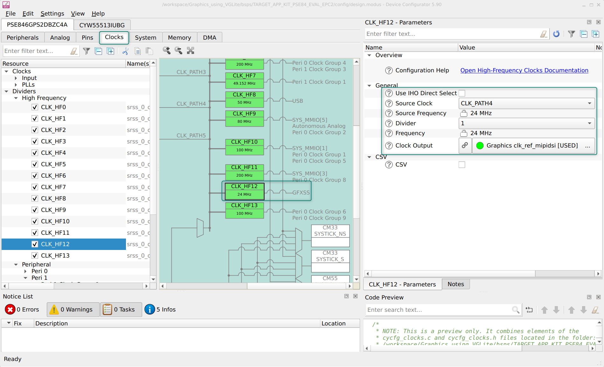
- Device Configurator also defines the custom memory map for system SRAM with respect to the placement of the graphics frame buffer and other memory regions
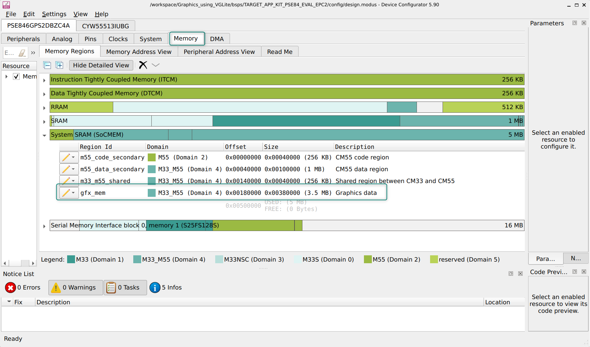
Output¶
The application starts automatically after programming.
You should observe a message in the terminal, followed by a menu, frames-per-second information, and CPU usage:
You should also observe that the display shows an animated logo.
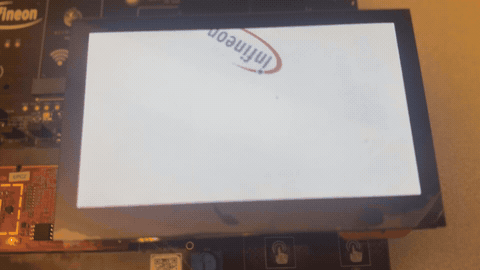
In addition to the logo display, the example allows you to run different demos:
- Fill rules
- The display shows two shapes on the left side with the VG_LITE_FILL_EVEN_ODD filling rule and two shapes on the right side with the VG_LITE_FILL_NON_ZERO filling rule.
- Alpha blending
- The display shows two shapes on the left side with the VG_LITE_BLEND_SRC_OVER blending mode and two shapes on the right side with the VG_LITE_BLEND_MULTIPLY blending mode.
- Blit color rendering
- The display shows two Infineon logos rectangularly blitted onto a TEAL_COLOR frame.
- Pattern fill
- The display shows the Infineon logo on four different shapes using the vg_lite_draw_pattern.
- UI/filter demo
- The display shows four different icons and a highlighted rectangle moving over all four icons with VG_LITE_FILTER_LINEAR.
Input the corresponding number in the terminal to run each demo and press Ctrl+C to go back to the main menu.
Modify the application¶
Render a different image¶
For this first modification, render a different image instead of the Infineon logo.
Hints for the advanced modification¶
- A sample image
tiger_paths.his available in the included source folder - Adjust image to display properly
Solution¶
- Copy the
tiger_paths.hfile from the included source files at~/Graphics_using_VGLite/Render Different image/proj_cm55and place it in theproj_cm55directory
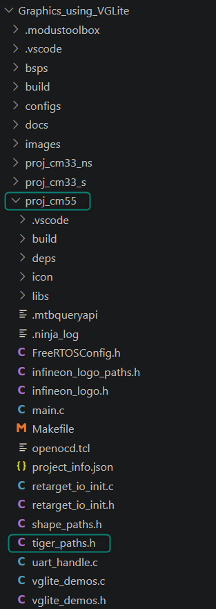
- Open
proj_cm55/vglite_demos.c, and replaceinfineon_logo_paths.hwith the newtiger_paths.h. The original and updated lines are shown in red and green, respectively:
#include "icon/vision.h"
#include "icon/wearable.h"
-#include "infineon_logo_paths.h"
+#include "tiger_paths.h"
#include "infineon_logo.h"
#include "shape_paths.h"
#include "retarget_io_init.h"
-
The
tiger_paths.hfile includes acolor_dataarray which conflicts with current definitions invglite_demos.cRemove thecolor_datadefinition invglite_demos.c:/* Global Variables */ bool zoom_out = false; int scale_count = RESET_VAL; -uint32_t color_data[] = -{ - 0xff4018ec, /* path_data0 : blue */ - 0xffb36600, /* path_data1 : red */ -}; vg_lite_buffer_t image_buffer; -
The tiger image has a different size compared to the Infineon logo. Locate the
load_images()call inproj_cm55/main.cand update the code snippet shown below (the full updated snippet is provided to allow copy and paste)if (success) { vg_lite_identity(&matrix); if (!load_images()) { printf("Failed to load icons\r\n"); success = false; } else { /* Translate the matrix to the center */ vg_lite_translate(DISP_W / 2 - 20 * DISP_W / 1024.0f, DISP_H / 2 - 100 * DISP_H / 600.0f + 50, &matrix); /* Set the default scale of the matrix */ vg_lite_scale(4, 4, &matrix); } } -
Build and program the application code You should observe the tiger image animated on the display.
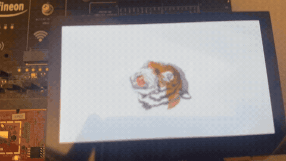
Draw polygons¶
For this second modification, explore how to use the vg_lite_draw function to draw polygons on the screen.
Modify the Fill rules demo to draw a cross instead of one of the default squares.
Hints for the advanced modification¶
- The two squares are drawn in
fill_rules_drawinsidevglite_demos.c - The function
vg_lite_drawdraws the polygon using a set of coordinates defined inshape_paths.h - The figure below shows the coordinates to draw a rectangle
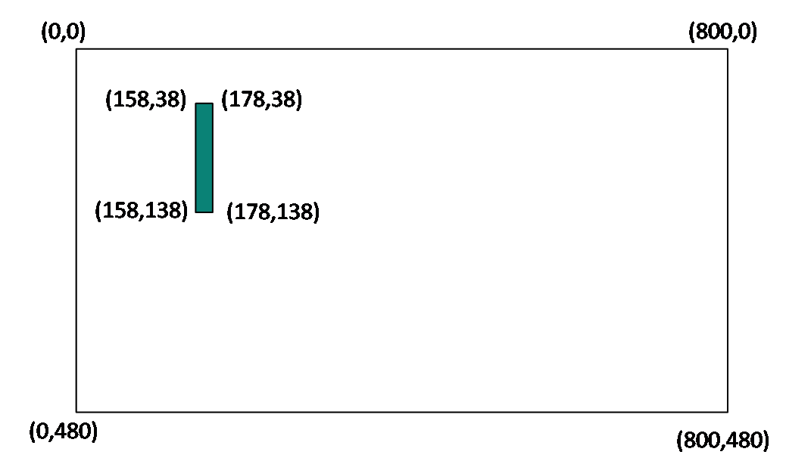
Solution¶
- Open
proj_cm55/vglite_demos.cand observe that the squares are drawn byvg_lite_drawand located byvg_lite_translate
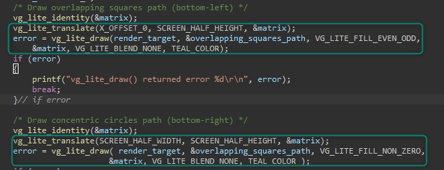
-
Replace the definition of
overlapping_squaresinshape_paths.h:int32_t overlapping_squares[] = { /* Cross */ 2, 158, 38, 4, 178, 38, 4, 178, 138, 4, 158, 138, 4, 158, 38, 2, 118, 78, 4, 118, 98, 4, 218, 98, 4, 218, 78, 4, 118, 78, /* Second square - Clockwise (shifted) */ 2, 183, 103, 4, 283, 103, 4, 283, 203, 4, 183, 203, 4, 183, 103, 0, /* End of path */ }; -
Rebuild and reprogram the device Press 1 in the terminal to run the Fill rules demo and observe the changes.
Try drawing other shapes or playing with the parameters of vg_lite_draw to test other features.
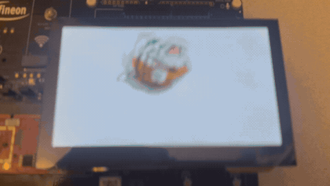
Conclusion¶
This exercise successfully created a PSOC™ Edge E84 MCU graphics application using ModusToolbox™. It configured the graphics subsystem and the display and touch driver, and called VGLite API functions to draw using the GPU in the PSOC™ Edge E84 MCU.
Code example: Graphics LVGL demo¶
Objective¶
This code example demonstrates displaying graphics on a 4.3-inch 800x480, 10.1-inch 1024x600, or 7-inch 1024x600 TFT LCD display using the Light and Versatile Graphics Library (LVGL) on PSOC™ Edge E84 MCU. The display shows a music player application, which is listed as one of the standard demos on the LVGL page. The display is connected to the PSOC™ Edge E84 MCU via the MIPI Display Serial Interface (DSI). The code runs in a FreeRTOS environment.
Description¶
This code example performs the following major steps to display a GUI created using the LVGL library.
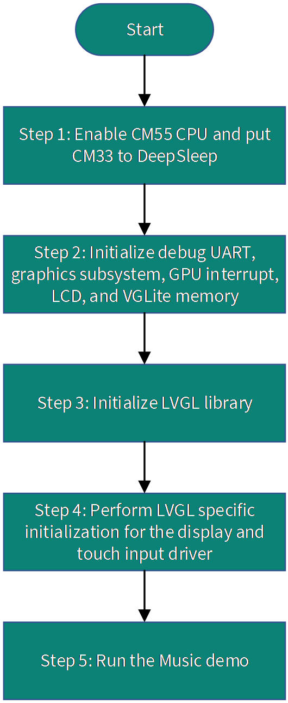
Flow chart¶
The following flow chart explains the complete code flow of this code example.
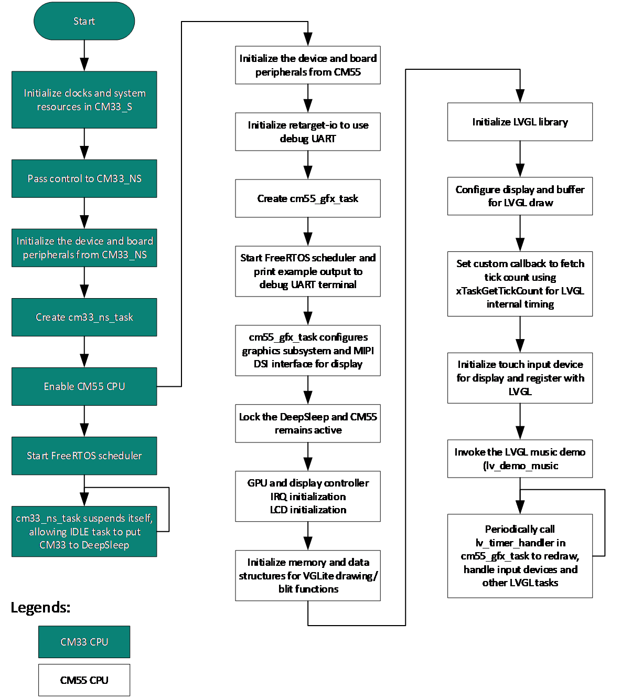
Project creation¶
- Follow steps in Appendix A: Creating a PSOC™ Edge application in ModusToolbox™ to create a new application When creating the application, select the PSOC™ Edge Graphics LVGL Demo application under the Graphics section.
Note: To prevent issues with Windows path length, it’s recommended to rename the project if your workspace path is long.
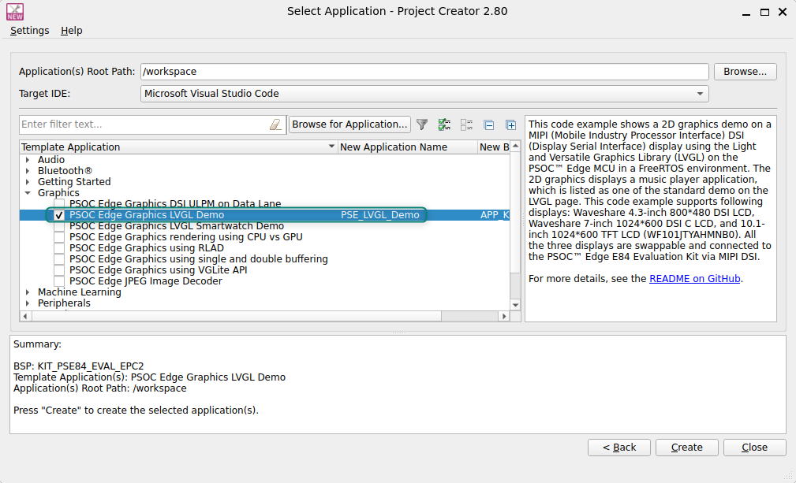
- Build and program the application
- [INFO] No modifications are needed to execute the default code example; however, some important files for this project are highlighted below:
-
lv_port_disp.c- This file provides the implementation of a low-level display device driver for LVGL. It creates a new display device for LVGL with the given resolution, sets up the frame buffer for the display, initializes a custom callback to fetch the tick count, and provides functions for refreshing or updating the display.
- The file also contains implementations of functions required by LVGL to get information about the display and how to draw pixels on the screen, such as
disp_flush(). Thedisp_flush()function is called by LVGL whenever a new frame is ready to be displayed, and it transfers the contents of the graphics frame buffer to the display controller. - This file is typically customized to work with specific display hardware. It may require modification of certain constants or register settings to properly configure the display. The specific implementation may also depend on the type of display being used, such as a TFT or OLED display.
-
lv_port_indev.c- This file provides the implementation of a low-level input device driver for LVGL. It initializes the touch driver to the corresponding display panel using the I2C interface and handles user input such as touch or button presses. It provides functions that map input events to specific actions or GUI elements in your LVGL application.
- The file also contains implementations of functions required by LVGL to get information from the input device, such as
touchpad_read(). Thetouchpad_read()function is called by LVGL to read input events from the input device and translate them into LVGL event types, such as LV_EVENT_PRESSED or LV_EVENT_RELEASED. - This file is typically customized to work with a specific input device. It may require modification of certain constants or register settings to properly configure the input device. The specific implementation may also depend on the type of input device being used, such as a touch screen or physical buttons.
-
lv_conf.h- This is a configuration file for the LVGL graphics library. It allows you to customize various aspects of the library, such as the display driver, memory allocation, theme, font, and more.
- The file provides a list of preprocessor directives that can be used to enable or disable certain features of the library. By modifying the directives in this file, you can tailor LVGL to suit your specific needs and hardware platform. It is typically included in your project along with the LVGL library files.
-
lv_draw_vg_lite.c, lv_draw_vg_lite_img.c- These files provide implementation of LVGL's image related operations ported to the VGLite library to use GPU aided rendering.
-
lv_vg_lite_utils.c- This file provides an implementation for LVGL's utility APIs ported to the VGLite library.
-
proj_cm55/main.c- This file defines the
cm55_gfx_taskwhich initializes the graphics subsystem and configures the GPU and display controller interrupts. After that, the file initializes the display panel driver for the selected display. - Once the panel is initialized, the required amount of memory is allocated for VGLite draw/blit functions to be consumed by the LVGL library.
- The
lv_init()function is used to initialize LVGL and set up the essential components required for LVGL to work correctly. - Low-level display and touch devices for LVGL are initialized using
lv_port_disp_init()andlv_port_indev_init()functions respectively. - The LVGL demo music player is displayed by calling the LVGL demo widget API
lv_demo_music().
- This file defines the
- [INFO] The libraries included in this example can also be observed by opening the Library Manager in the ModusToolbox™ for VS Code extension
Observe the added libraries in
proj_cm55for LVGL and displays. Note that the Library Manager can also be used to add support for this display and LVGL to other applications.
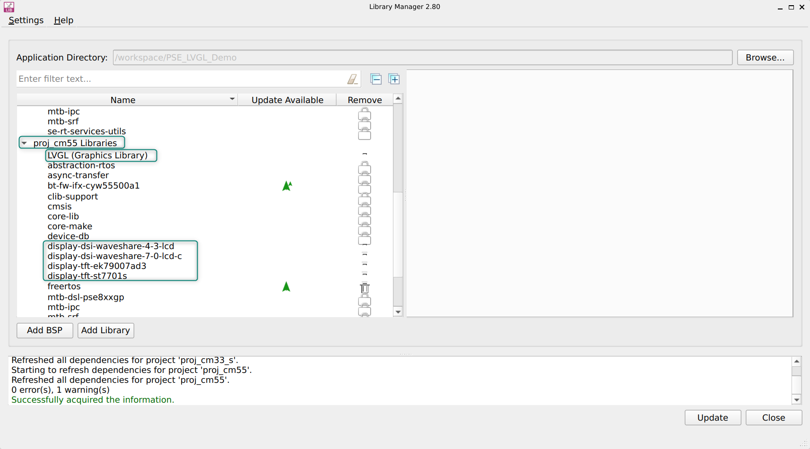
Output¶
After programming is successful, open the serial terminal and set the serial port parameters to 8N1 and 115200 baud. Reset the EVK and observe that the terminal displays the header.
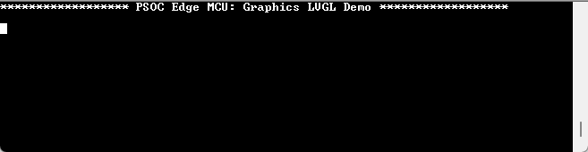
Observe that the LCD displays a music player demo application as shown below. You can use the touch screen to perform various actions such as playing or pausing a track, changing to the next or previous track, and viewing the playlist. Note that music is not played, only graphics actions are demonstrated in this code example.
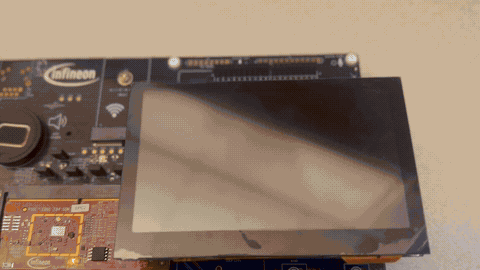
Modify the application¶
Pre-built LVGL demos¶
For this first modification, try testing other pre-built LVGL demos, and enable CPU usage indicators.
Hints for the advanced modification¶
- LVGL demos and CPU usage indicators can be enabled in
lv_conf.h - Make sure the application calls the correct
lv_demofunction
Solution¶
- To switch to other available LVGL demos, the corresponding
LV_USE_DEMO_<demo_name>macro must be enabled inproj_cm55\include\lv_conf.hEnableLV_USE_DEMO_WIDGETSand note thatLV_USE_DEMO_BENCHMARKis disabled:
/*===================
* DEMO USAGE
====================*/
#if LV_BUILD_DEMOS
/** Show some widgets. This might be required to increase `LV_MEM_SIZE`. */
#if LV_USE_DEMO_BENCHMARK
#define LV_USE_DEMO_WIDGETS 1
#else
- #define LV_USE_DEMO_WIDGETS 0
+ #define LV_USE_DEMO_WIDGETS 1
#endif
- The system monitor component
LV_USE_SYSMONallows CPU usage metrics to be observed in the display. Enable it in the samelv_conf.hfile:
/*==================
* OTHERS
*==================*/
/* Documentation for several of the below items can be found here: https://docs.lvgl.io/master/auxiliary-modules/index.html . */
/** 1: Enable API to take snapshot for object */
#define LV_USE_SNAPSHOT 0
/** 1: Enable system monitor component */
#if LV_USE_DEMO_BENCHMARK
#define LV_USE_SYSMON 1
#else
- #define LV_USE_SYSMON 0
+ #define LV_USE_SYSMON 1
#endif
- Open
proj_cm55/main.cand observe that the application callslv_demo_musicwhenDEMO_BENCHMARKis disabled, andlv_demo_benchmarkwhen the macro is enabled. Modify the code to runlv_demo_widgetsinstead of the music demo. Note that you can enable and run other LVGL demos in this way.
#if LV_USE_DEMO_BENCHMARK
/* Register our end callback - LVGL calls it when all scenes finish.
* Touch is initialized there, so polling does not affect benchmark scores. */
lv_demo_benchmark_set_end_cb(benchmark_end_cb);
/* Run the Benchmark demo */
lv_demo_benchmark();
#else
/* Initialize touch input. Skipped during benchmark to avoid the
* CPU overhead of polling-mode touch. */
lv_port_indev_init();
/* Run the Music demo */
- lv_demo_music();
+ lv_demo_widgets();
#endif
- Rebuild and reprogram the application
- You should observe the widgets demo together with CPU metrics in the bottom left corner
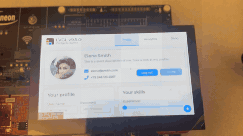
Custom UI using EEZ Studio¶
LVGL is a widely used graphics library supported by the open-source community and many third parties. In this exercise, generate a custom UI using the EEZ Studio tool.
Hints for the advanced modification¶
- Use EEZ Studio to generate a new UI
- Add the generated UI files to the cm55 project
- Call the corresponding functions to initialize the custom UI and update it periodically
Solution¶
- If EEZ Studio is not already installed, install it now
- Open EEZ Studio and click Examples, select the Change Screen example under the LVGL category, select a name, add a location, and click Edit Project
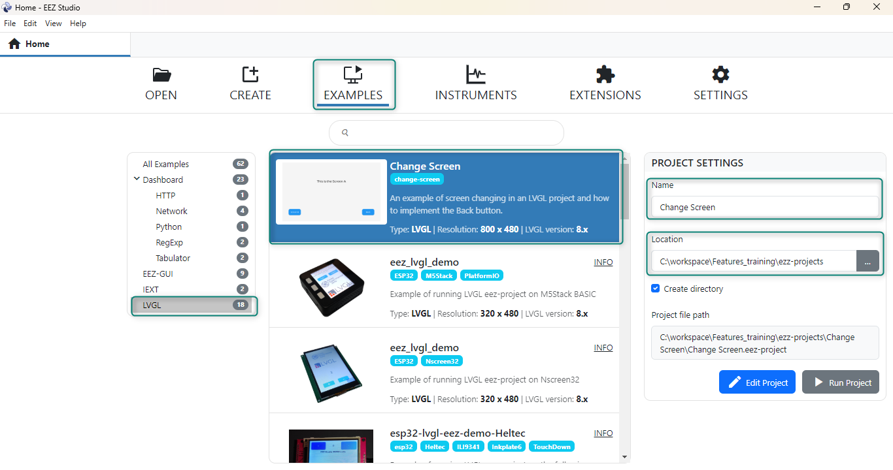
- Click the Settings button
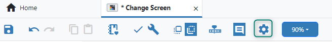
- In the General tab, confirm that the LVGL version is 9.5 since ModusToolbox™ 3.9 uses LVGL 9.5.0, and that the display resolution is 800x480, since the 4.3-inch display included with the PSOC™ Edge E84 kit is used
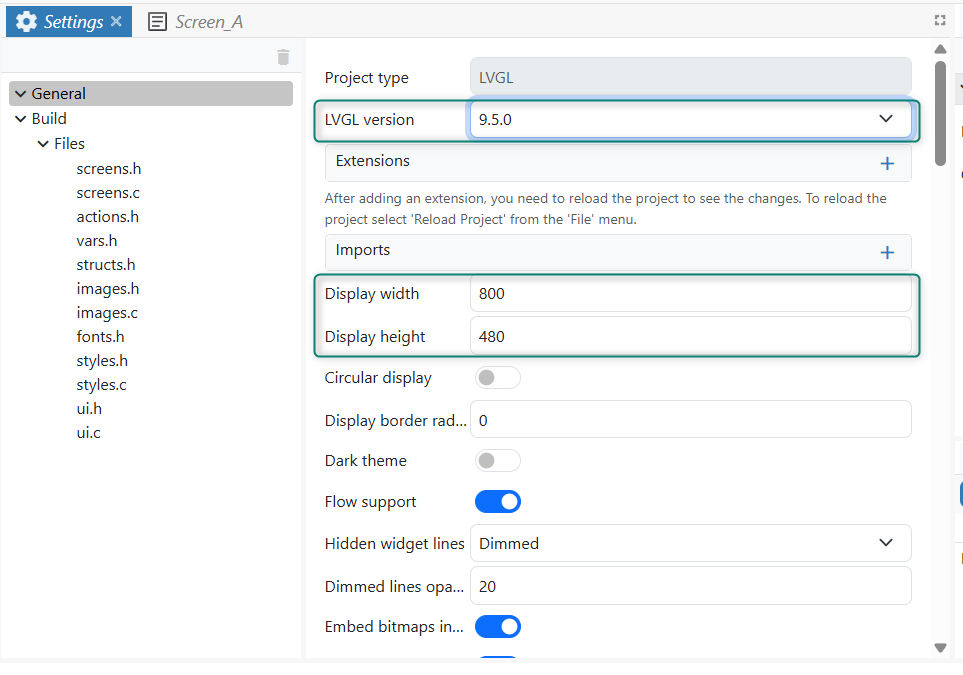
- Go to the Build options and modify the LVGL include setting as
lvgl.h, since the project is configuring a direct path to LVGL insidemtb_shared; and observe that the Destination folder is set tosrc\uisince this is where the output files will be generated
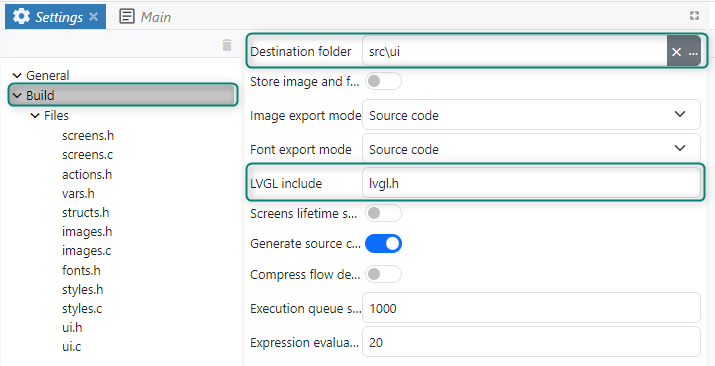
- Modify the default GUI. Make sure the Main page is selected, then open the Bitmaps panel on the right side, and click the plus (+) icon to add a bitmap
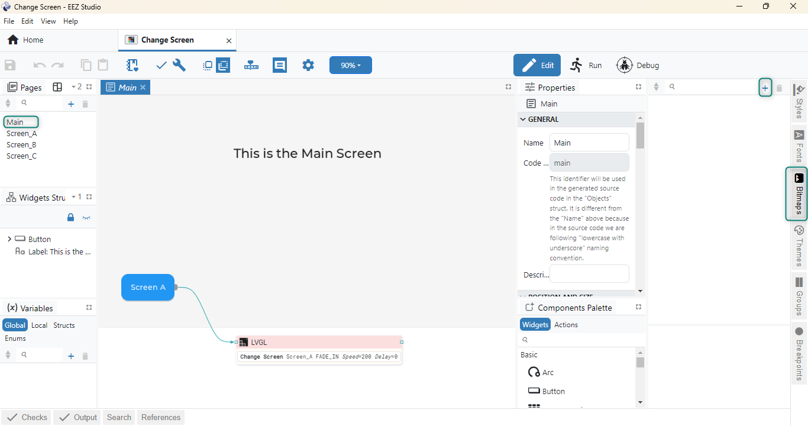
- Click the image browse button, navigate to the lab source folder, and select the image located at
<lab_source_folder>\Graphics_LVGL_Demo\Custom UI using EEZStudio\PSE84.pngAdd a Name, and select Color format as RGB565, and then click OK Feel free to add an image of your choice.
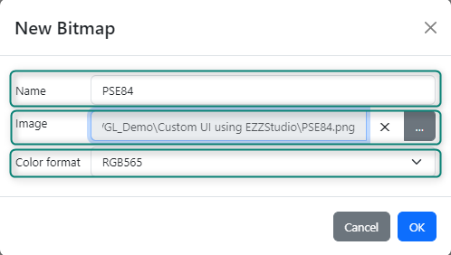
- Drag-and-drop an Image widget from the Components Palette into the Main Screen
Then, go to the Properties and select the Image corresponding to the bitmap added in the previous step.
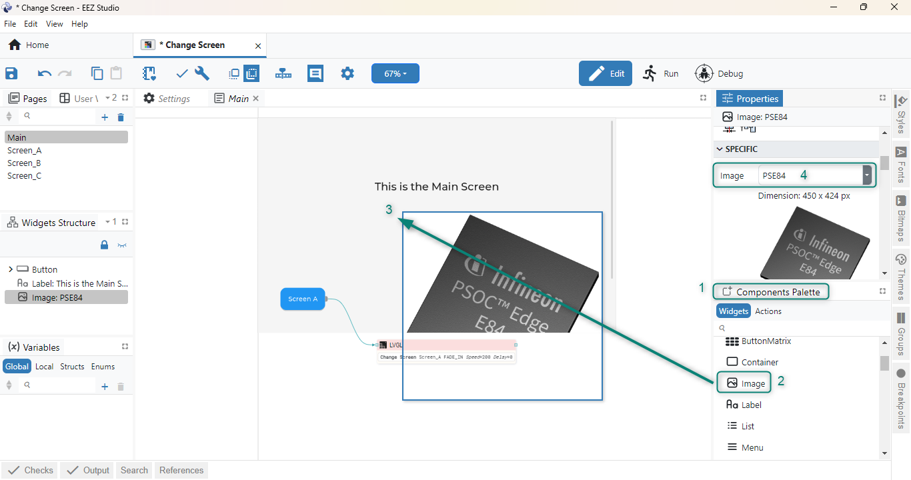
- Adjust the label and image so that it fits properly in the page
- Test one of the widgets on Screen A Go to the Screen A page and drag and drop an Arc widget from the Components Palette. Feel free to try other widgets.
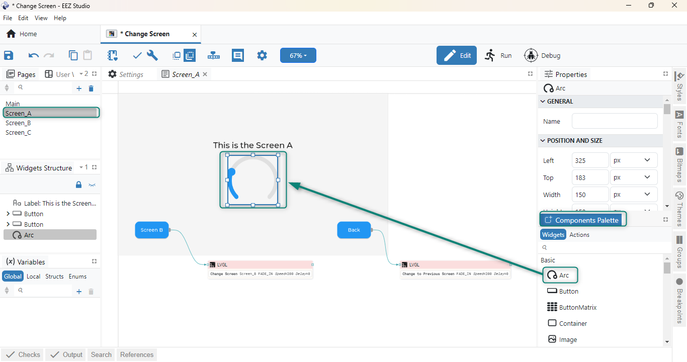
- Save the project, click the Check button to validate the project, and then click the Build button to generate the output files
Note: EEZ Studio will display any missing system requirements. The known requirements are listed in the Prerequisites section.
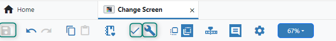
- Copy the generated UI folder from
<EEZ_Project_path>/src/uito theproj_cm55. Note that you can right-click the EEZ Studio project tab to find and copy the project path.
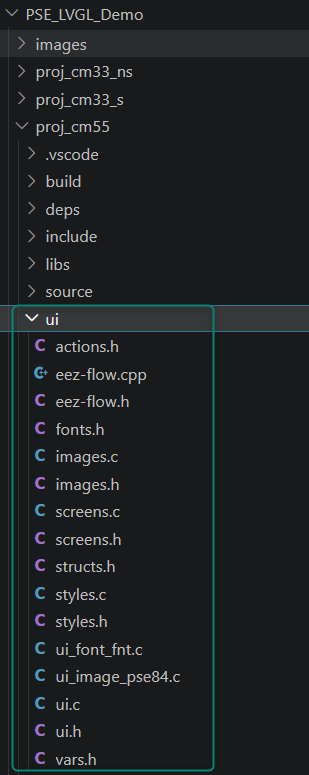
- Open
proj_cm55/source/main.cand make the following modifications to initialize the new GUI and to call a periodic tick function to handle UI events:
#include "lv_port_disp.h"
#include "lv_port_indev.h"
#include "demos/lv_demos.h"
#include "display_i2c_config.h"
+#include "ui.h"
#if LV_USE_DEMO_BENCHMARK
/* Register our end callback - LVGL calls it when all scenes finish.
* Touch is initialized there, so polling does not affect benchmark scores. */
lv_demo_benchmark_set_end_cb(benchmark_end_cb);
/* Run the Benchmark demo */
lv_demo_benchmark();
#else
/* Initialize touch input. Skipped during benchmark to avoid the
* CPU overhead of polling-mode touch. */
lv_port_indev_init();
- /* Run the Music demo */
- lv_demo_widgets();
+ /* Run the custom UI */
+ ui_init();
#endif
- Add a call to
ui_tick()in the main loop to periodically process UI events:
for (;;)
{
/* LVGL's timer handler function, to be called periodically to handle
* LVGL tasks.
*/
time_till_next = lv_timer_handler();
vTaskDelay(pdMS_TO_TICKS(time_till_next));
+ ui_tick(); /* Call UI tick to handle events */
}
- Rebuild and program the example
- You should observe the new GUI running on your PSOC™ Edge EVK. Try the different screens and/or perform more customizations
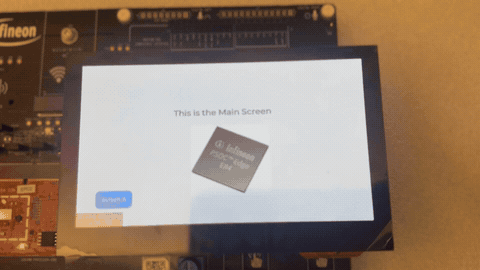
Conclusion¶
This exercise successfully created a PSOC™ Edge E84 MCU graphics application using ModusToolbox™, figured out how to configure the graphics subsystem, and utilized the LVGL graphics library to develop a full-fledged UI application on the PSOC™ Edge E84 MCU platform.
Revision history¶
| Document revision | Date | Description of changes |
|---|---|---|
| *A | 2026-09-26 | Updated to latest tools and using Visual Studio Code. |
| ** | 2025-01-15 | Initial release. |
Disclaimer¶
All referenced product or service names and trademarks are the property of their respective owners.
The Bluetooth® word mark and logos are registered trademarks owned by Bluetooth SIG, Inc., and any use of such marks by Infineon is under license.
PSOC™, formerly known as PSOC™, is a trademark of Infineon Technologies. Any references to PSOC™ in this document or others shall be deemed to refer to PSOC™.
© Cypress Semiconductor Corporation, 2023-2026. This document is the property of Cypress Semiconductor Corporation, an Infineon Technologies company, and its affiliates ("Cypress"). This document, including any software or firmware included or referenced in this document ("Software"), is owned by Cypress under the intellectual property laws and treaties of the United States and other countries worldwide. Cypress reserves all rights under such laws and treaties and does not, except as specifically stated in this paragraph, grant any license under its patents, copyrights, trademarks, or other intellectual property rights. If the Software is not accompanied by a license agreement and you do not otherwise have a written agreement with Cypress governing the use of the Software, then Cypress hereby grants you a personal, non-exclusive, nontransferable license (without the right to sublicense) (1) under its copyright rights in the Software (a) for Software provided in source code form, to modify and reproduce the Software solely for use with Cypress hardware products, only internally within your organization, and (b) to distribute the Software in binary code form externally to end users (either directly or indirectly through resellers and distributors), solely for use on Cypress hardware product units, and (2) under those claims of Cypress's patents that are infringed by the Software (as provided by Cypress, unmodified) to make, use, distribute, and import the Software solely for use with Cypress hardware products. Any other use, reproduction, modification, translation, or compilation of the Software is prohibited.
TO THE EXTENT PERMITTED BY APPLICABLE LAW, CYPRESS MAKES NO WARRANTY OF ANY KIND, EXPRESS OR IMPLIED, WITH REGARD TO THIS DOCUMENT OR ANY SOFTWARE OR ACCOMPANYING HARDWARE, INCLUDING, BUT NOT LIMITED TO, THE IMPLIED WARRANTIES OF MERCHANTABILITY AND FITNESS FOR A PARTICULAR PURPOSE. No computing device can be absolutely secure. Therefore, despite security measures implemented in Cypress hardware or software products, Cypress shall have no liability arising out of any security breach, such as unauthorized access to or use of a Cypress product. CYPRESS DOES NOT REPRESENT, WARRANT, OR GUARANTEE THAT CYPRESS PRODUCTS, OR SYSTEMS CREATED USING CYPRESS PRODUCTS, WILL BE FREE FROM CORRUPTION, ATTACK, VIRUSES, INTERFERENCE, HACKING, DATA LOSS OR THEFT, OR OTHER SECURITY INTRUSION (collectively, "Security Breach"). Cypress disclaims any liability relating to any Security Breach, and you shall and hereby do release Cypress from any claim, damage, or other liability arising from any Security Breach. In addition, the products described in these materials may contain design defects or errors known as errata which may cause the product to deviate from published specifications. To the extent permitted by applicable law, Cypress reserves the right to make changes to this document without further notice. Cypress does not assume any liability arising out of the application or use of any product or circuit described in this document. Any information provided in this document, including any sample design information or programming code, is provided only for reference purposes. It is the responsibility of the user of this document to properly design, program, and test the functionality and safety of any application made of this information and any resulting product. "High-Risk Device" means any device or system whose failure could cause personal injury, death, or property damage. Examples of High-Risk Devices are weapons, nuclear installations, surgical implants, and other medical devices. "Critical Component" means any component of a High-Risk Device whose failure to perform can be reasonably expected to cause, directly or indirectly, the failure of the High-Risk Device, or to affect its safety or effectiveness. Cypress is not liable, in whole or in part, and you shall and hereby do release Cypress from any claim, damage, or other liability arising from any use of a Cypress product as a Critical Component in a High-Risk Device. You shall indemnify and hold Cypress, including its affiliates, and its directors, officers, employees, agents, distributors, and assigns harmless from and against all claims, costs, damages, and expenses, arising out of any claim, including claims for product liability, personal injury or death, or property damage arising from any use of a Cypress product as a Critical Component in a High-Risk Device. Cypress products are not intended or authorized for use as a Critical Component in any High-Risk Device except to the limited extent that (i) Cypress's published data sheet for the product explicitly states Cypress has qualified the product for use in a specific High-Risk Device, or (ii) Cypress has given you advance written authorization to use the product as a Critical Component in the specific High-Risk Device and you have signed a separate indemnification agreement.
Cypress, the Cypress logo, and combinations thereof, ModusToolbox, PSOC, CAPSENSE, EZ-USB, F-RAM, and TRAVEO are trademarks or registered trademarks of Cypress or a subsidiary of Cypress in the United States or in other countries. For a more complete list of Cypress trademarks, visit www.infineon.com. Other names and brands may be claimed as property of their respective owners.